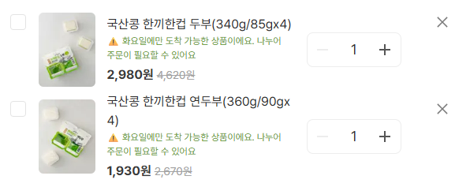

사례 A — COO 직접 보고
물류 불안정으로 출고 지연 1,000건 이상이 동시에 발생했습니다. 재배송·취소·대기 케이스에 대한 판단 기준이 없어 팀 전체가 케이스마다 다르게 대응하고 있었습니다. 일관된 처리가 불가능한 상황이었고, 고객 민원도 빠르게 쌓였습니다.
도착 희망일별 배송 SLA 처리 기준을 재배송·취소·대기 케이스로 나눠 직접 설계했습니다. COO에게 직접 보고해 승인을 받은 후, 팀 전체 기준으로 확정 공유했습니다.
기준이 없던 위기 상황에서 팀 전체가 동일한 기준으로 움직일 수 있는 구조를 만들었습니다. 이후 유사 상황에서 반복 적용할 수 있는 SOP로 정착됐습니다.
사례 B — CEO 선제적 제안 및 승인
재무팀 공백 상황에서 경영진이 매일 수백 건의 자금집행 시트를 직접 스크롤해 당일 처리 건을 찾아 판단하던 구조를 발견했습니다. 정보가 없어서가 아니라, 정리되지 않아서 판단이 느려지고 있는 문제였습니다.
Google Sheets에서 당일 집행 예정 건을 자동 추출하고, Claude가 필수·일반으로 분류해 Slack으로 발송하는 시스템을 요청 없이 먼저 구축했습니다. 샘플과 함께 CEO에게 제안해 승인을 받았고, 이후 매일 아침 8시 30분 전후 경영진에게 자동 발송되는 구조로 정식 운영에 들어갔습니다.
Outcome
Evidence

Insight